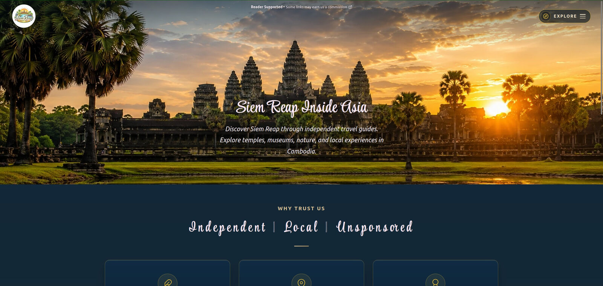

Web application engineering
I design and implement core engines for web applications.
Modular systems, application architecture, performance, automation, and verification — built to be understood, tested, and maintained.
01 production systems · sanitized technical evidence
Featured project
Real production project
SRIA is a live publishing platform built around practical research, clear content, and a maintainable WordPress architecture.

Siem Reap Inside Asia
Independent travel publishing, backed by custom systems.
A production platform combining multilingual publishing, performance work, custom administration, and evidence-led content operations.
Supporting system: Travel Bonanza! — a focused recommendation system inside SRIA.
Selected technical systems
Modular systems. Real-world solutions.
Four focused examples from larger SRIA and MIOS systems. Each case study contains the technical detail and verification evidence.
-
01
Multilingual publishing
Language-aware content with protected tokens, intelligent routing, and a scalable publishing architecture.
View details -
02
Full-page caching
Event-driven caching with bounded staleness, reliable invalidation, and regeneration handling.
View details -
03
Research & data engine
Flexible data collection and processing with provider abstraction, resilient primitives, and calibration metrics.
View details -
04
Verification & certification
Immutable domain primitives and reproducible verification to support trust, transparency, and maintainability.
View details
Capabilities
Useful engineering across the stack.
- WordPress & PHPCustom plugins, themes, routing, and administration.
- Application architectureBoundaries, contracts, and systems that stay understandable.
- Performance & cachingDiagnosis, invalidation, reliability, and recovery.
- Python & data systemsCollection, normalization, persistence, and analysis.
- Automation & integrationsScheduled jobs, APIs, and operational feedback.
- Debugging & verificationRoot-cause investigation, tests, and certification.
Contact
Have a system that needs careful engineering?
Tell me what you are building, repairing, or trying to understand.